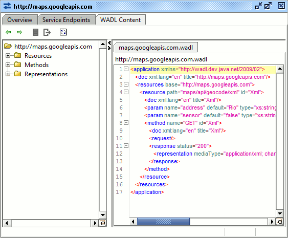

Les possibilités ?

- Non standard
- Non versionnable
- Difficilement maintenable
Au final non utilisable
Les possibilités ?

- Non standard
- Difficilement maintenable
- lourd à produire
Pas plus utilisable
Les possibilités ?

WADL
- Tentative de porter WSDL
- XML
- Brouillon
- A oublier
Perdu dans les limbes de l'histoire
Et c'est bien
Swagger 2.0
- Description API REST
- YAML ou JSON
- Top-Bottom ou Bottom-Top
- Outillage